Revisa la Bibliografía recomendada en la sección Fuentes de Información del curso.
Notas para la clase.
La Primera Ley de la Termodinámica: Sistemas Cerrados
La primera ley de la termodinámica es una expresión del principio de conservación de la energía. La energía puede cruzar los límites de un sistema cerrado en forma de calor o trabajo. La transferencia de energía a través de los límites de un sistema debido únicamente a la diferencia de temperatura entre un sistema y su entorno se denomina calor.
La energía de trabajo se puede considerar como la energía utilizada para levantar un peso.
Convención de signos
Se requiere una convención de signos para las transferencias de calor y energía de trabajo, y se selecciona la convención de signos clásica para estas notas. De acuerdo con la convención de signos clásica, la transferencia de calor a un sistema y el trabajo realizado por un sistema son positivos; la transferencia de calor de un sistema y el trabajo realizado sobre un sistema son negativos.En estas notas utilizaremos el concepto de calor neto y trabajo neto. Al sistema que se muestra a continuación se le suministra calor y se realiza trabajo.
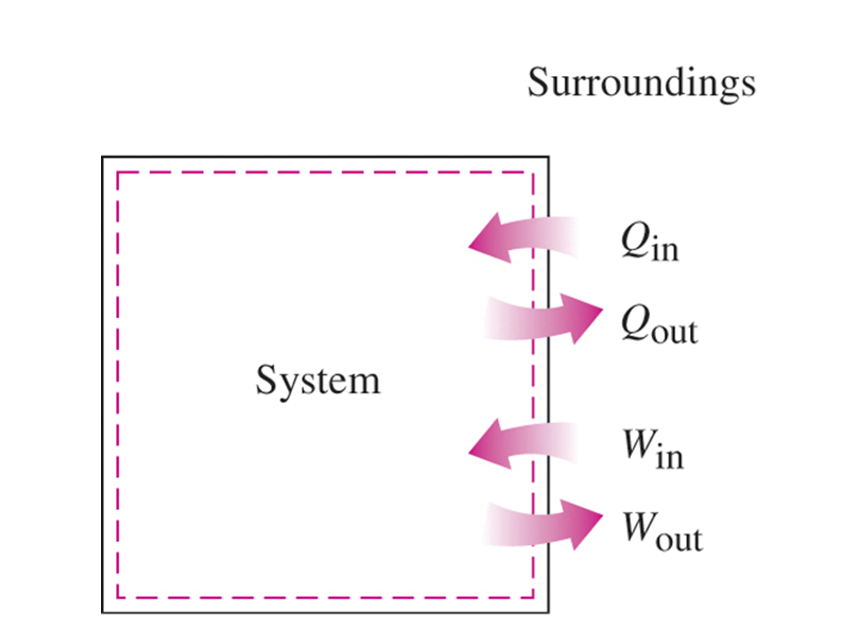
Transferencia de calor
Recuerde que el calor es energía en transición a través de los límites del sistema únicamente debido a la diferencia de temperatura entre el sistema y su entorno. El calor neto transferido a un sistema se define como
$$ \delta Q_{\text{neto}} = Q_{\text{en}} - Q_{\text{sal}} $$Aquí, el calor de entrada, $Q_{\text{en}}$, y el calor de salida, $Q_{\text{sal}}$, son las magnitudes de los valores de transferencia de calor que entra y que sale, respectivamente. En la mayoría de los textos de termodinámica, la cantidad, $Q$, pretende ser el calor neto transferido al sistema, $Q_{neto}$ . Dado que la transferencia de calor depende del proceso, el diferencial de transferencia de calor, $\delta Q$, se considera inexacto. A menudo utilizamos la transferencia de calor por unidad de masa del sistema, $q = \displaystyle{\frac{Q}{m}}$.
La transferencia de calor tiene las unidades de energía, joules (usaremos kilojoules, $\text{kJ}$) o las unidades de energía por unidad de masa, $\displaystyle{\frac{kJ}{kg}}$.
Dado que la transferencia de calor es energía en transición a través de las fronteras del sistema debido a una diferencia de temperaturas, existen tres modos de transferencia de calor en las fronteras que dependen de la diferencia de temperatura entre la superficie de las fronteras y los alrededores. Estos son: conducción, convección y radiación. Sin embargo, cuando se resuelven problemas de termodinámica que involucran la transferencia de calor a un sistema, la transferencia de calor generalmente se da o se calcula aplicando la primera ley de la termodinámica, o la ley de conservación de la energía, al sistema.
Un proceso adiabático es aquel en el que el sistema está perfectamente aislado y la transferencia de calor es cero.
Transferencia de calor por conducción a través de paredes planas
La transferencia de calor por conducción es un intercambio progresivo de energía entre las moléculas de una sustancia sólida. La razón de transferencia de conducción de calor a través de un material de espesor constante $\Delta x$ es proporcional a la diferencia de temperaturas, $\Delta T$, en las caras y también es proporcional al área, $A$ normal a la direccion de la transferencia de calor, pero es inversamente proporcional al espesor de la capa,
$$ \dot{Q}_{\text{cond}} = A k \frac{\Delta T}{\Delta x} $$donde
$\dot{Q}_{\text{cond}} = $ es el flujo de calor por unidad de tiempo, $[\text{W}]$,
$A = $ es el área transversal (perpendicular) al flujo de calor, $[\text{m}^2]$,
$k = $ es la conductividad térmica del material y es una medida de la capacidad del material para conducir calor, $\left[\displaystyle{\frac{\text{W}}{\text{m K}}}\right]$,
$\displaystyle{\frac{\Delta T}{\Delta x}} = $ es el gradiente de temperatura en la dirección opuesta al flujo de calor, $\left[\displaystyle{\frac{\text{K}}{\text{m}}}\right]$.
$A = $ es el área transversal (perpendicular) al flujo de calor, $[\text{m}^2]$,
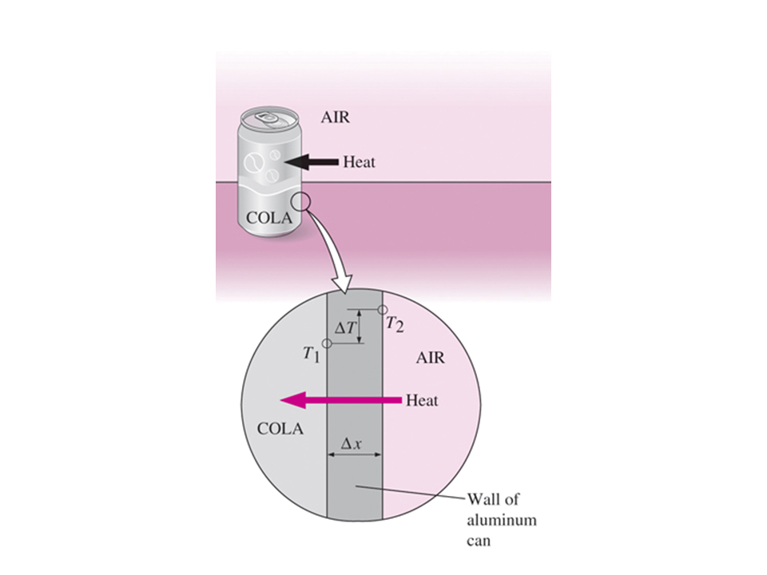
En el caso cuando $\Delta x \leftarrow 0$, la ecuación anterior se reduce a la forma diferencial
$$ \dot{Q}_{\text{cond}} = - A k \frac{d T}{d x} $$que se conoce como la ley de Fourier de conducción del calor.
Como $T_2 \gt T_1$, el calor fluye de derecha a izquierda en la figura anterior.
Transferencia de calor por convección
La transferencia de calor por convección es el modo de transferencia de energía entre una superficie sólida y el líquido o gas adyacente que está en movimiento, e involucra los efectos combinados de conducción y movimiento de fluidos.
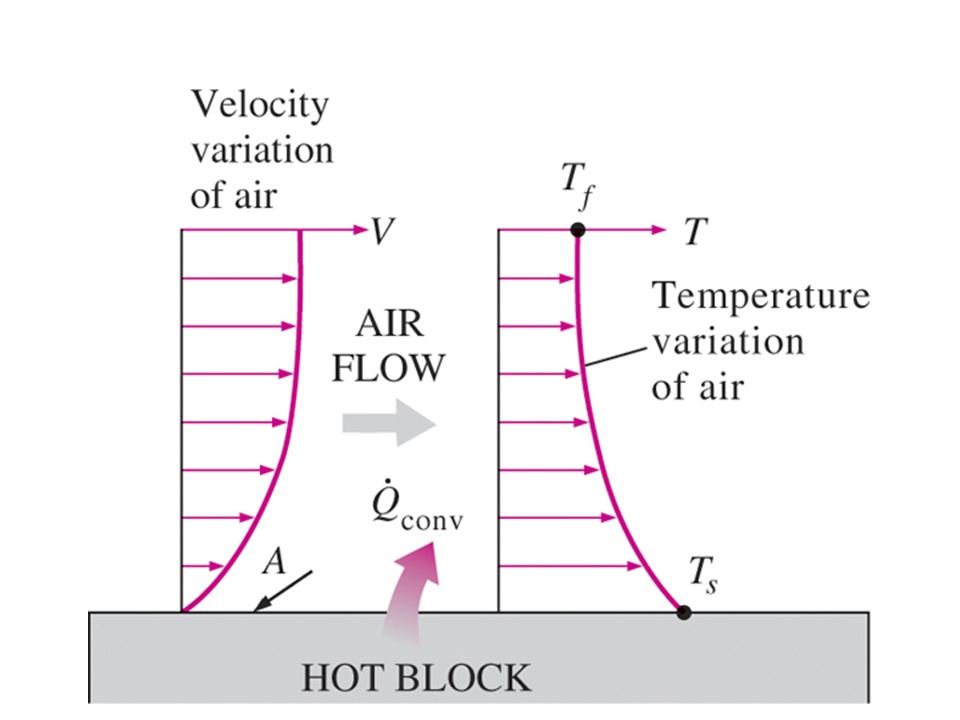
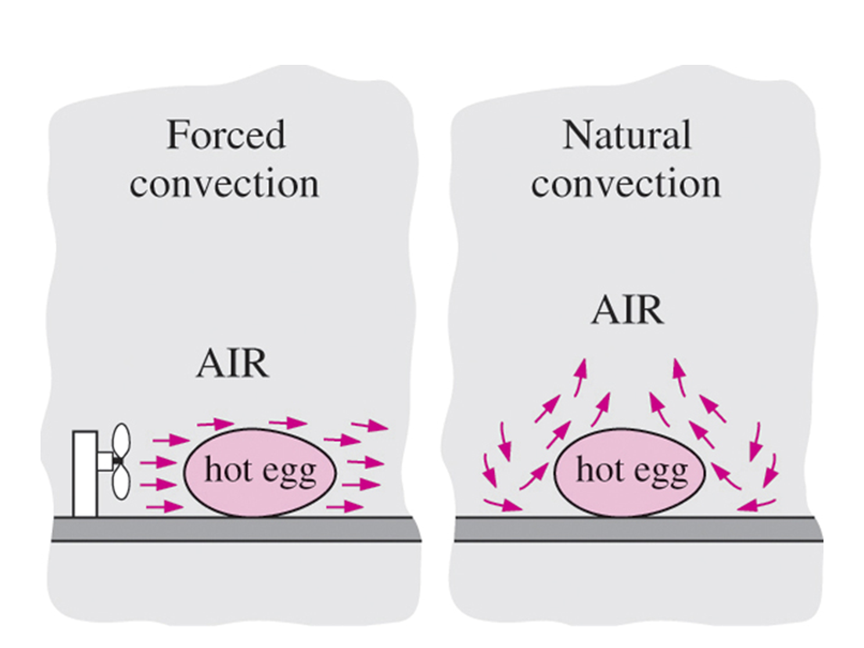
La tasa de transferencia de calor por convección,$\dot{Q}_\text{conv}$, se determina a partir de la ley de enfriamiento de Newton, expresada como
$$ \dot{Q}_\text{conv} = h A (T_s - T_\infty) $$donde
$\dot{Q}_{\text{conv}} = $ es el flujo de calor por unidad de tiempo, $[\text{W}]$,
$A = $ es el área transversal (perpendicular) al flujo de calor, $[\text{m}^2]$,
$h = $ es la coeficiente de transferencia de calor por convección del material y es una medida de la capacidad del material para conducir calor, $\left[\displaystyle{\frac{\text{W}}{\text{m}^2 \text{K}}}\right]$,
$T_s = $ temperatura superficial, $[\text{K}]$,
$T_\infty = $ temperatura del fluido lejos de la superficie, $[\text{K}]$,
El coeficiente de transferencia de calor por convección es un parámetro determinado experimentalmente que depende de la geometría de la superficie, la naturaleza del movimiento del fluido, las propiedades del fluido y la velocidad del fluido. Los rangos del coeficiente de transferencia de calor por convección se dan a continuación.
Transferencia de calor por radiación
La transferencia de calor por radiación es energía en transición desde la superficie de un cuerpo a la superficie de otro debido a la radiación electromagnética. La energía radiativa transferida es proporcional a la diferencia en la cuarta potencia de las temperaturas absolutas de los cuerpos que intercambian energía.
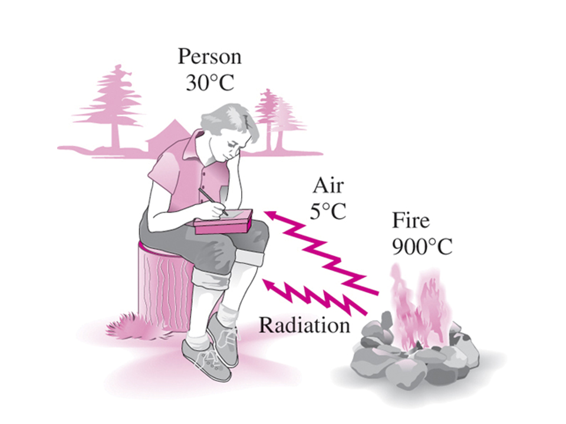
El intercambio neto de transferencia de calor por radiación entre la superficie de un cuerpo y su entorno viene dado por
$$ \dot{Q}_\text{rad} = \epsilon \sigma A (T_s^4 - T_{\infty}^4) $$ donde$\dot{Q}_{\text{rad}} = $ es el flujo de calor por unidad de tiempo, $[\text{W}]$,
$\epsilon = $ es la emisividad y es adimensional,
$\sigma = $ es la constante de Stefan-Boltzmann, su valor en el SI es $5.67 \times 10^{-8} $\left[\displaystyle{\frac{\text{W}}{\text{m}^2 \text{K}^4}}\right]$, y su valor en el USC es $0.1713 \times 10^{-8} $\left[\displaystyle{\frac{\text{Btu}}{\text{h} \text{ft}^2 \text{R}^4}}\right]$,$A = $ es el área transversal (perpendicular) al flujo de calor, $[\text{m}^2]$,
$T_s = $ temperatura superficial, $[\text{K}]$,
$T_\infty = $ temperatura del fluido lejos de la superficie, $[\text{K}]$,
Trabajo
El trabajo es la energía gastada por una fuerza que actúa a lo largo de una distancia. El trabajo termodinámico se define como energía en transición a través de las fronteras del sistema y lo realiza un sistema si el único efecto externo a las fronteras podría haber sido el levantamiento de un peso.
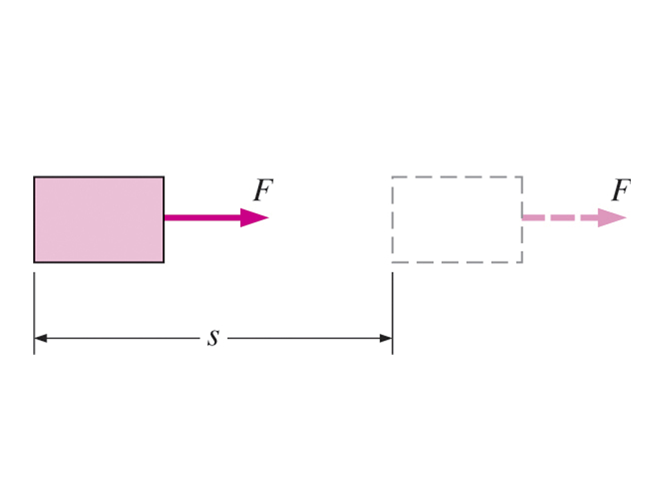
Matemáticamente, el diferencial de trabajo se expresa como
$$ \delta W = \textbf{F} \cdot d \textbf{s} = F \; ds \; \cos \theta $$Al igual que con la transferencia de calor, delta significa que el trabajo es una función dependiente de la trayectoria y tiene un diferencial inexacto. Si el ángulo entre la fuerza y el desplazamiento es cero, el trabajo realizado entre dos estados es
$$ W_{12} = \int_1^2 d W = \int_1^2 F ds $$El trabajo tiene las unidades de energía, fuerza por desplazamiento o Newton por metro, $[\text{N}\text{m}]$, o joule, $[\text{J}]$ (usaremos kilojoules, $[\text{kJ}]$). El trabajo por unidad de masa del sistema se mide en $\left[ \displaystyle{\frac{\text{kJ}}{\text{kg}}} \right]$.
Tipos comunes de energía en forma de trabajo
El trabajo neto realizado por el sistema puede tener dos formas:
En primer lugar, puede haber trabajo que cruce la frontera del sistema en forma de eje giratorio o trabajo eléctrico. Llamaremos trabajo de eje y al trabajo eléctrico lo llamaremos como "otro" trabajo; es decir, trabajo no asociado con una frontera móvil. En termodinámica, la energía eléctrica normalmente se considera energía de trabajo en lugar de energía térmica; pero la ubicación de la frontera del sistema dicta si se debe incluir la energía eléctrica como trabajo o como calor.
En segundo lugar, el sistema puede realizar trabajo en su entorno debido a las fronteras en movimiento.
El trabajo neto realizado por un sistema cerrado está definido por
$$ W_{\text{neto}} = \left. \left( \sum W_\text{sal} - \sum W_\text{ent} \right) \right|_{\text{otros}} + W_\text{front} $$o
$$ W_{\text{neto}} = \left. W_{\text{neto}} \right|_{\text{otros}} + W_\text{front} $$Aquí, $ W_\text{sal}$ y $ W_\text{ent}$ son las magnitudes de las otras formas de trabajo que cruzan la frontera. $ W_\text{front}$ es el trabajo debido a una frontera móvil y será positivo o negativo según el proceso.
En los libros de texto se analizan varios tipos de otras formas de trabajo como trabajo de eje, trabajo eléctrico, etc.
Trabajo de frontera
El trabajo es energía gastada cuando una fuerza actúa a través de un desplazamiento. El trabajo de frontera se produce porque la masa de la sustancia contenida dentro de la frontera del sistema provoca una fuerza, la presión multiplicada por el área superficial, para actuar sobre la superficie de frontera y hacer que se mueva. Esto es lo que sucede cuando el vapor de la figura siguiente, contenido en un dispositivo de pistón-cilindro, se expande contra el pistón y obliga al pistón a moverse; por tanto, el trabajo de frontera lo realiza el vapor sobre el pistón. Luego se calcula el trabajo de contorno a partir de
$$ W_{b} = \int_1^2 \delta W_{b} = \int_1^2 F ds = \int_1^2 \frac{F}{A} A ds = \int_1^2 p dV $$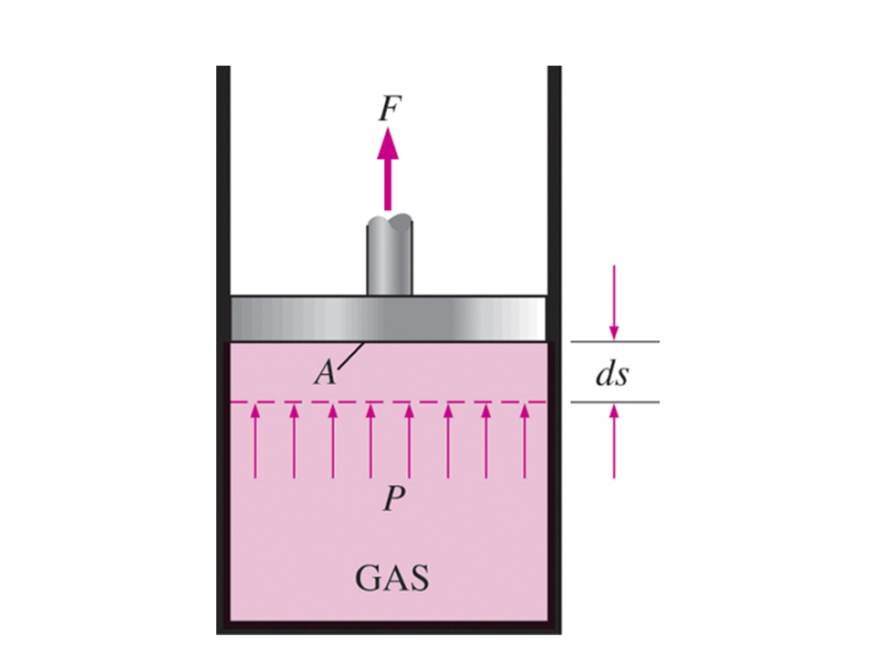
Dado que el trabajo depende del proceso, el diferencial del trabajo de frontera
$$ \delta W_{b} = p dV $$se se dice que es inexacta. En la ecuación anterior, $ W_{b} $ es válida para un proceso de cuasiequilibrio, y proporciona el trabajo máximo realizado durante la expansión y el trabajo mínimo de entrada durante la compresión.
Para calcular el trabajo de frontera, se debe conocer el proceso por el cual el sistema cambia de estado. Una vez que se determina el proceso, se puede obtener la relación presión-volumen para el proceso y se puede realizar la integral en la ecuación de trabajo de frontera. Para cada proceso necesitamos determinar $ p = f(V) $; entonces, a medida que resolvamos los problemas, nos preguntaremos: ¿Cuál es la relación presión-volumen para el proceso? Recuerde que esta relación es realmente la función fuerza-desplazamiento, el trabajo de frontera es igual al área bajo la curva de proceso trazada en el diagrama presión-volumen.
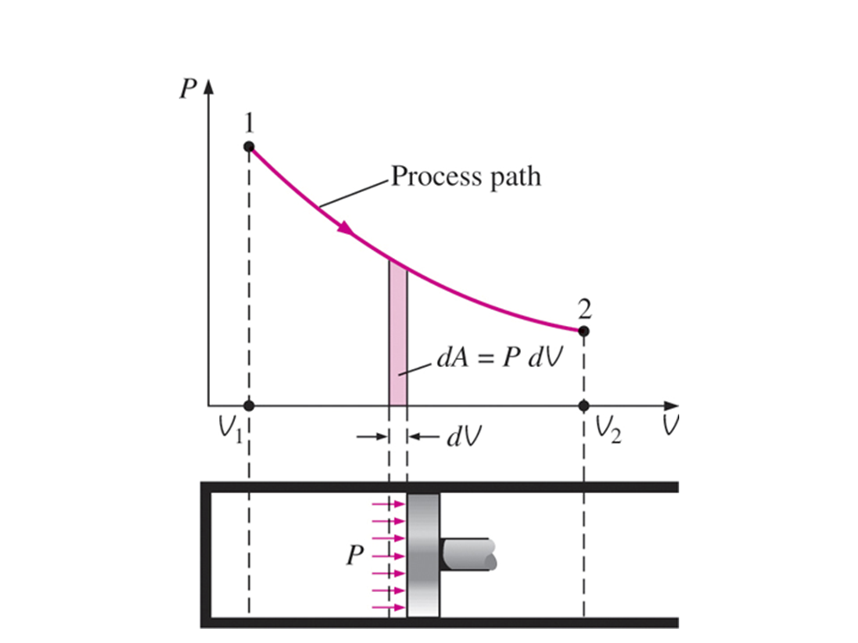
Notas:
DDado que las áreas bajo la curva de cada proceso en un diagrama $p-V$ son diferentes, el trabajo de frontera será diferente para cada proceso, como se puede ver en la figura siguiente.
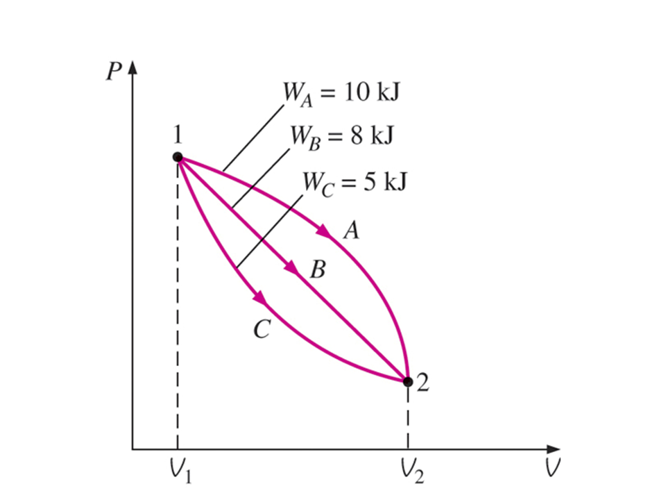
Algunos procesos típicos
Proceso a volumen constante
Si el volumen se mantiene constante, $d V = 0$, y la ecuación del trabajo de frontera se convierte en
$$ W_{b} = \int_1^2 p dV = 0 $$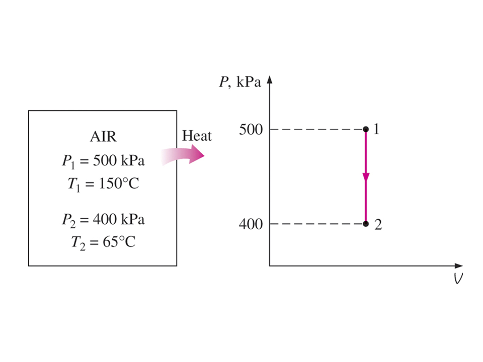
Proceso a presión constante
Si la presión se mantiene constante, $d V = 0$, y la ecuación del trabajo de frontera se convierte en
$$ W_{b} = \int_1^2 p dV = p \int_1^2 dV = p (V_2 - V_1) $$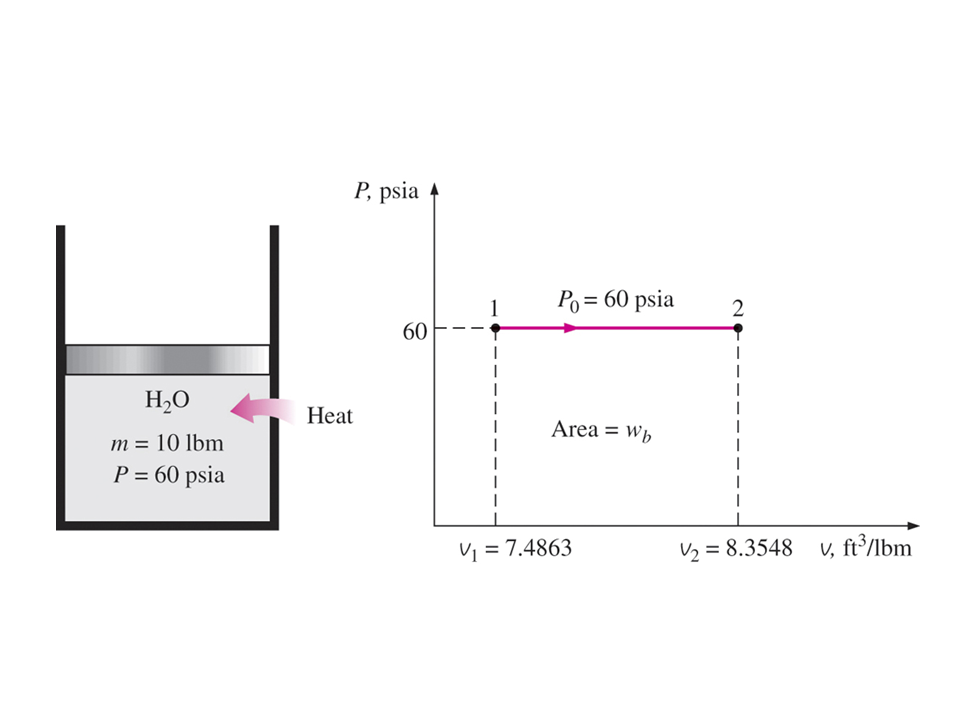
Proceso a temperatura constante para gas ideal
Si la temperatura de un sistema de gas ideal se mantiene constante, entonces la ecuación de estado proporciona la relación presión-volumen
$$ p = \frac{m R T}{V} $$entonces, el trabajo de frontera es
$$ W_{b} = \int_1^2 p dV = \int_1^2 \frac{m R T}{V} dV = m R T \ln \frac{V_2}{V_1} $$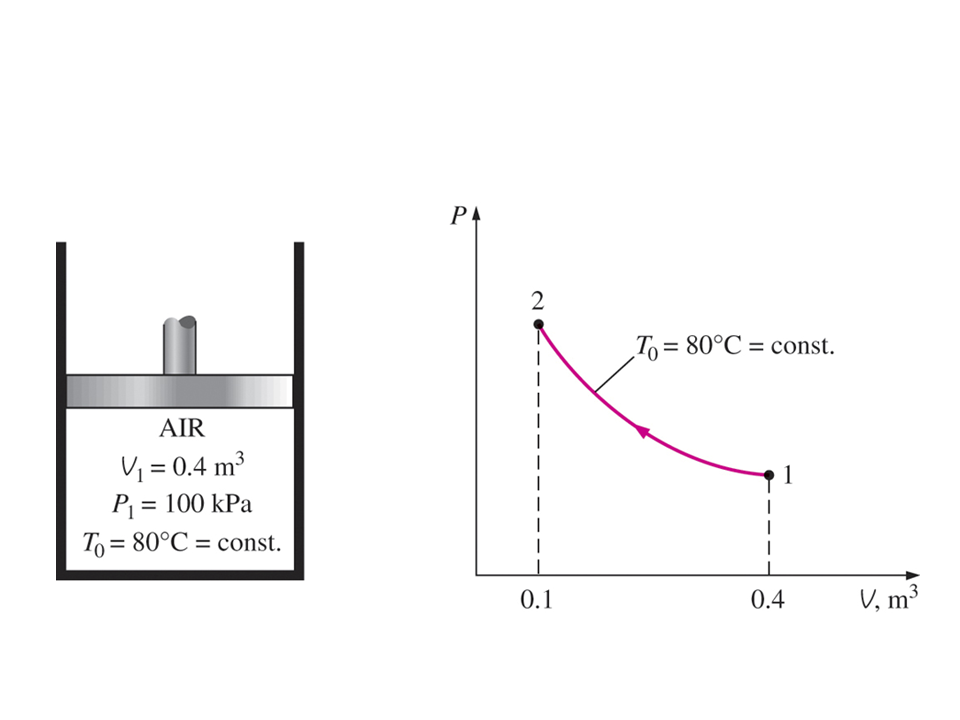
Nota: La ecuación anterior es el resultado de aplicar la suposición de gas ideal para la ecuación de estado. Para gases reales que experimentan un proceso isotérmico (temperatura constante), la integral en la ecuación de trabajo límite se calcularía numéricamente.
Proceso politrópico
El proceso politrópico es aquel en el que la relación presión-volumen se da como
$$ p V^n = \text{Constante} $$El exponente $n$ puede tener cualquier valor desde menos infinito hasta más infinito dependiendo del proceso. Algunos de los valores más comunes se dan a continuación.
| Proceso | Exponente $n$ |
| Presión, $p$ | $ 0 $ | x
| Volumen | $ \infty $ |
| Adiabático y gas ideal | $ 1 $ |
| Isotérmico y gas ideal | $ k = \displaystyle{\frac{C_p}{C_V}} $ |
Aquí $k$ es la relación entre el calor específico a presión constante, $C_p$, y el calor específico a volumen constante, $C_V$. Los calores específicos se discutirán más adelante.
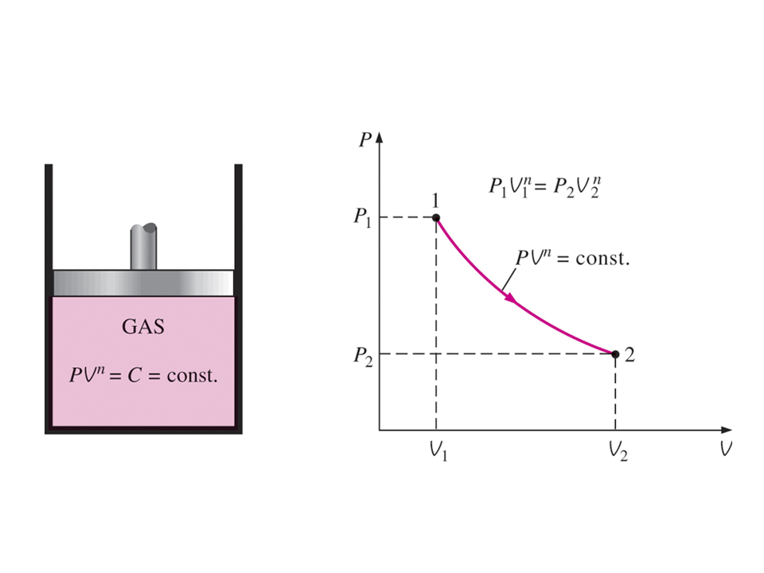
El trabajo de frontera realizado durante el proceso politrópico se encuentra sustituyendo la relación $p V^n = \text{Constante}$ en la ecuación de trabajo de frontera. El resultado es
$$ W_{b} = \int_1^2 p\; dV = \int_1^2 \frac{\text{Const}}{V^n} dV = \left\{ \begin{array}{lcl} \displaystyle{\frac{p_2 V_2 - p_1 V_1}{1 - n}} & , & n \neq 1 \\ p \; V \ln \displaystyle{\frac{V_2}{V_1}} & , & n = 1 \end{array} \right. $$Para un gas ideal sometido a un proceso politrópico, el trabajo de frontera es
$$ W_{b} = \int_1^2 p\; dV = \int_1^2 \frac{\text{Const}}{V^n} dV = \left\{ \begin{array}{lcl} \displaystyle{\frac{m \; R \; (T_2 - T_1)}{1 - n}} & , & n \neq 1 \\ m \; R \; T \ln \displaystyle{\frac{V_2}{V_1}} & , & n = 1 \end{array} \right. $$Nótese que los resultados que obtuvimos para un gas ideal sometido a un proceso politrópico cuando $n = 1$, son idénticos a los de un gas ideal sometido a un proceso isotérmico.
Primera ley del sistema cerrado
A continuación se muestra un sistema cerrado que se mueve en relación a un plano de referencia, donde $z$ es la elevación del centro de masa sobre el plano de referencia y $\mathbf{v}$ es la velocidad del centro de masa.
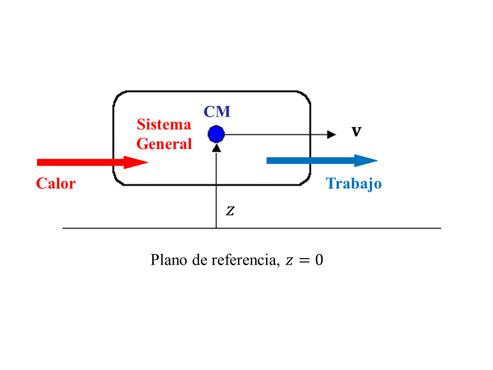
Para el sistema cerrado que se muestra arriba, el principio de conservación de la energía o Primera Ley de la Termodinámica se expresa como
$$ E_{\text{ent}} - E{\text{sal}} = \Delta E_{\text{sist}} $$De acuerdo con la termodinámica clásica, consideramos que la energía añadida es la transferencia de calor neta al sistema y la energía que sale del sistema es el trabajo neto realizado por el sistema. Asi que,
$$ Q_{\text{neto}} - W{\text{neto}} = \Delta E_{\text{sist}} $$Normalmente, la energía almacenada, o energía total, de un sistema se expresa como la suma de tres energías separadas. La energía total del sistema , $E_{sist}$, se da como
$$ E = \text{Energía Interna} + \text{Energía Cinética} + \text{Energía Potencial} $$ $$ E = U + EC + EP $$Recuerde que $U$ es la suma de la energía contenida dentro de las moléculas del sistema distintas de las energías cinética y potencial del sistema como un todo, y se denomina energía interna. La energía interna, $U$, depende del estado del sistema y de la masa del sistema. Para un sistema que se mueve en relación con un plano de referencia, la energía cinética, $EC$, y la energía potencial, $EP$, están dadas por
$$ EC = \frac{1}{2} m\; v^2 $$ $$ EP = m \; g \; z $$El cambio en la energía almacenada para el sistema es
$$ \Delta E_{\text{sist}} = \Delta U + \Delta EC + \Delta EP $$Ahora, el principio de conservación de la energía, o Primera Ley de la Termodinámica, para Sistemas Cerrados se escribe como
$$ Q_{\text{neto}} - W_{\text{neto}} = \Delta U + \Delta EC + \Delta EP $$Si el sistema no se mueve con una velocidad y no tiene cambios en la elevación, la ecuación de conservación de la energía se reduce a
$$ Q_{\text{neto}} - W_{\text{neto}} = \Delta U $$Encontraremos que esta es la forma más comúnmente utilizada de la primera ley.
Primera ley de un sistema cerrado para un ciclo
Dado que un ciclo termodinámico se compone de procesos que hacen que el fluido de trabajo sufra una serie de cambios de estado a través de una serie de procesos tales que los estados final e inicial son idénticos, el cambio en la energía interna del fluido de trabajo es cero para ciclos completos. La Primera Ley para un sistema cerrado que opera en un ciclo termodinámico se convierte en
$$ Q_{\text{neto}} = W_{\text{neto}} $$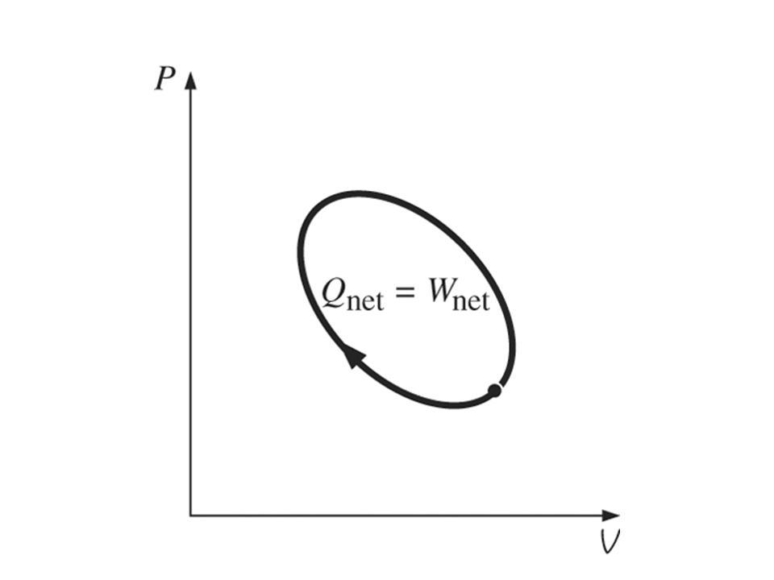